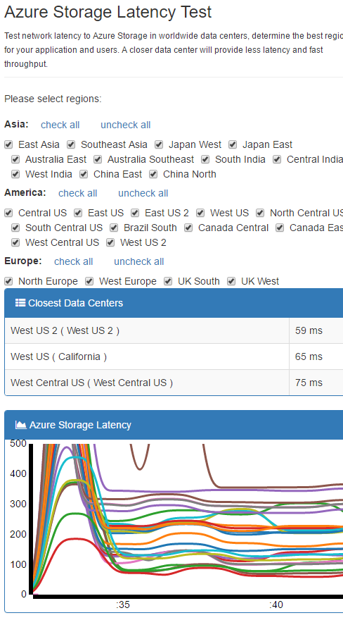
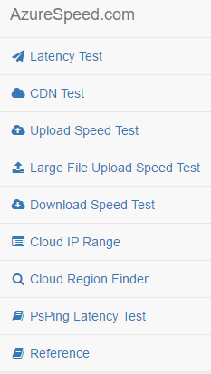
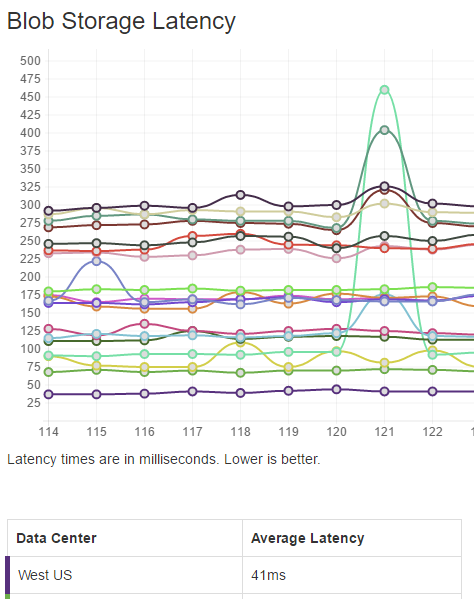

I recently gave a few presentations at Ignite New Zealand and used a couple of applications to help me find the lowest latency Azure Region from Auckland. You’ll want to know the top two regions, because you have your primary setup in one region and your backup is in another region (just in case the primary region goes offline during your demo).
If you want more accurate results then use PsPing, if you want a quick estimate based on latency from a browser to an Azure Datacenter, then use one of the options below.
Here’s another good post with more tips on finding your idea Azure Region: Tips for Choosing a Microsoft Azure Region
With either approach below, you will need to ask someone from your target location to run the test.
Azure Storage Latency Test
The Azure Storage Latency Test site looks like it is maintained more frequently, becuase it has the West US 2 region, while the other option below does not.
This site allows you to select the regions you want to test and shows you the top 3 closest regions.

The other great thing about this site is that it includes Upload/Download Speed Tests, Cloud IP Ranges and a Cloud Region Finder.

You can find the source here: blrchen / AzureSpeed
Microsoft Azure Speed Test
azurespeedtest.azurewebsites.net
When you hit Microsoft Azure Speed Test the speed test will start and you will be presented with a line chart with all of the regions sorted by Average Latency.

This isn’t an exact measurement of all services as it just a read test from blog storage.
Here’s the code that is used to ping the blob.
$.ajax({
url: "https://" + x + ".blob.core.windows.net/cb.json",
dataType: "jsonp",
cache: false
});
You can for their repo here: two10degress / AzureSpeedTest
Jon